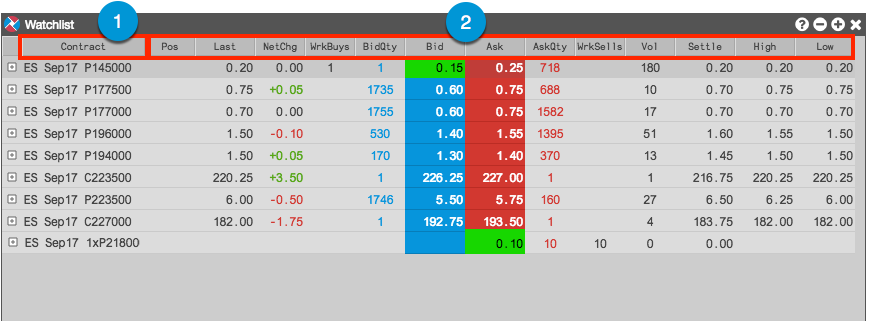

The Watchlist widget consists of the following:

- Contract column — Shows the options or futures instrument, exchange-defined strategy, or user-defined strategy sent to the Watchlist.
- Market data columns — Shows columns displaying market data and options Greeks (if shown) for the instrument or strategy sent to the Watchlist. Columns can also be shown for implied bid and ask quantities for Watchlist strategies that do not exist at the exchange. When displaying detailed depth, asterisks are displayed next to quantities that are partially or completely implied.
Note: Strategies with implied markets are displayed in italics. If not italicized, the strategy or instrument exists at the exchange and its actual market data is displayed in the Watchlist.
You can show/hide the columns using the local Settings: Watchlist screen opened from the right-click context menu.